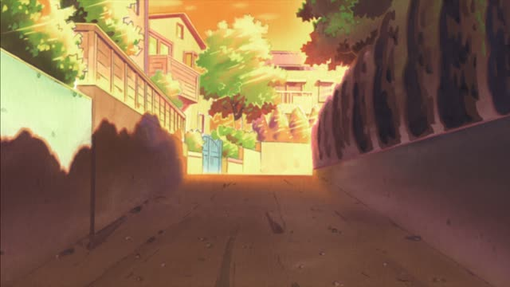
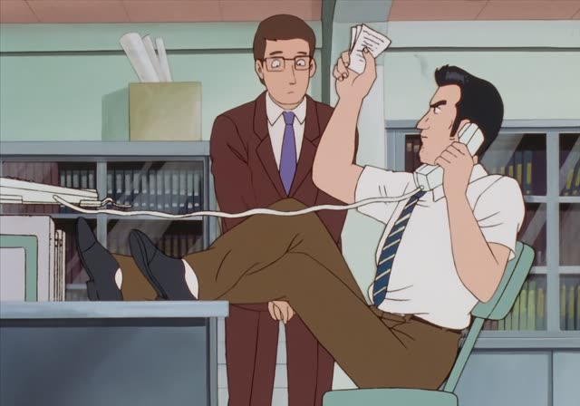
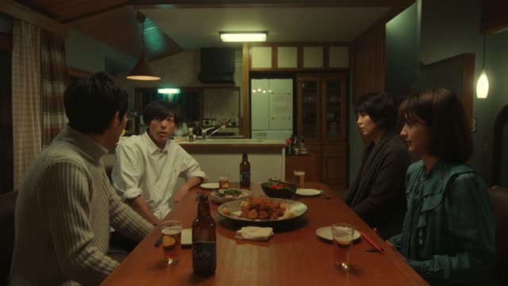
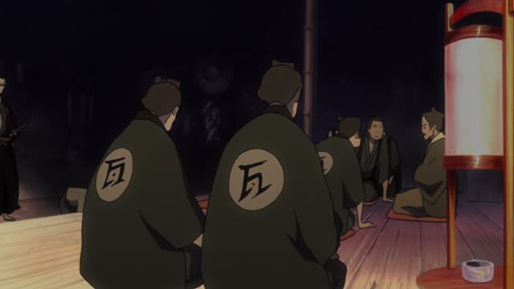
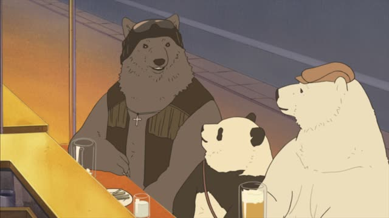
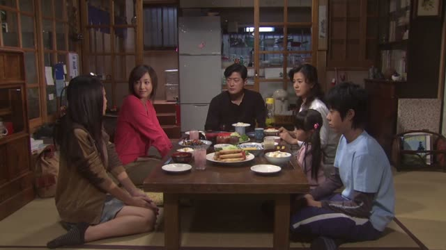
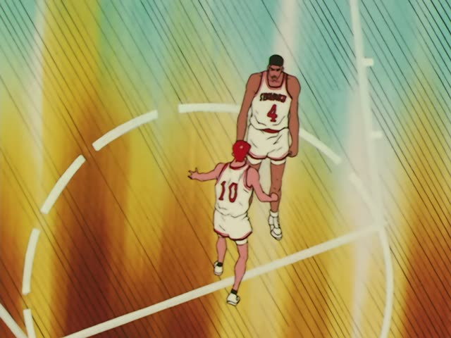

～ば

Shirokuma Cafe · Episode 49
そこの角を曲がればもののけの森です。
"If you turn that corner, it's the Spirit Forest."
～ば means "if": do the first thing, and you get the second. Verbs: change the last sound to the え-sound and add ば (曲がる → 曲がれば, 行く → 行けば). い-adjectives: い → ければ (高い → 高ければ).
On this card, the group is almost at the old forest: turn the corner and you're there. です makes it polite.
Very common in どうすればいい？ "what should I do?" and ～ばいい "you just have to".

Oishinbo · Episode 28
うーんと苦労すれば、必ず報われるとも。
"If you work really hard, it'll pay off for sure."
On this card, an old man encourages a student. する → すれば: if you struggle, you'll be rewarded.
Quick Examples
Asking for directions.
この道をまっすぐ行けば、駅です。
"Go straight down this road and you'll reach the station."
PoliteYour friend can't decide.
安ければ買う。
"If it's cheap, I'll buy it."
い-adjective: 安い → 安ければ.
CasualA coworker is stuck.
どうすればいいですか？
"What should I do?"
する → すれば.
PoliteYour friend missed the train.
タクシーで行けばいいじゃん。
"Just take a taxi."
～ばいい: you just have to.
CasualWith and without
練習する。上手になる。
"You practice. You get better." Two facts.
練習すれば上手になる。
"If you practice, you'll get better." One leads to the other.
Examples from Media

Quartet · Episode 1
どう言えばいいんですか？
"How should I put it?"
言う → 言えば.
Goblin Slayer · Episode 8
今日は何をすればよいのですか？
"What should I do today?"
よい = formal いい.

Samurai Champloo · Episode 3
今行けば、やつらの思うつぼだ。
"If we go now, we're playing right into their hands."
Vinland Saga · Episode 14
半分あれば、なんとか冬は越せる！
"If we have half, we can just about get through winter!"
ある → あれば.

Shirokuma Cafe · Episode 11
明るいときもあれば、暗いときもある。
"There are bright times, and there are dark times."
～もあれば～もある: there's A, and there's also B.
Dungeon Meshi · Episode 15
私はどうすればいい？
"What should I do?"

1 Litre of Tears · Episode 6
そんなの断ればいいじゃん。
"Just say no."
断る → 断れば + いいじゃん: you could just...

Slam Dunk · Episode 30
一つ一つ覚えていけばいい。
"Just learn them one at a time."